Kimi K3：从 3T 稀疏预训练到百万 Token Agent 的端到端扩展
《Kimi K3: Open Frontier Intelligence》是 Kimi Team 发布的 47 页技术报告；当前笔记依据 2026 年 8 月 7 日的 arXiv v2，官方首次发布日为 7 月 16 日。报告没有单列 affiliation，本文依据官方技术博客、模型页和仓库将组织归属写作 Moonshot AI / 月之暗面，但不把它伪装成 PDF 明示字段。完整模型权重已在 Hugging Face 发布；官方仓库 已建立，不过截至本次核验主要是说明、许可、素材与技术报告，不能据此声称完整训练代码也已开源。本文的阅读重点不是“2.8T 参数”这个单点数字，而是架构、后训练和基础设施如何共同把超大稀疏模型变成可训练、可长程行动、可上线的系统。
开放模型近年的突破主要来自更强的推理与 Agent 后训练，但若预训练基础长期停留在相近的 1T 级规模，继续堆叠 test-time compute 可能越来越像在同一底座上榨取余量；真正的难点是同时扩展序列长度、网络深度、专家宽度与长程行动，并让数值稳定性、训练通信、百万 token 状态管理和线上成本一起可承受。
1. 背景和问题
1.1 两条 scaling 轴为什么必须一起推进
传统大模型 scaling 主要发生在部署前：增加参数、数据和训练计算，以更强的预训练表示换取下游能力。推理模型兴起后，部署时计算成为第二条轴，模型可以延长思考、调用工具、检查中间结果，甚至让多个 Agent 分工。开放生态在第二条轴上的进展很快，DeepSeek-R1、Kimi K1.5 和 Kimi K2.5 Agent Swarm 都证明，强化学习和测试时计算能够从强底座中激发复杂行为。K3 报告提出的警告是：如果开放模型的预训练底座持续集中在 1T 左右，而更复杂的 RL、Agent harness 和 reasoning budget 反复施加在相似容量上，方法差异可能被底座上限吞没，最终只是在同一能力边界附近换取不同形式的表现。
因此 K3 同时推动两条轴。部署前，它把总参数扩到 2.78T、单 token 激活参数扩到 104.2B，并让图像、视频和文本从预训练开始共享语言主干；部署时，它把上下文扩到 1M token，在 general、agentic、coding 三个领域和 low、high、max 三种 effort 上做 RL，再把九个专门策略蒸馏回统一模型。这里的“上下文更长”也不是只让模型一次读入更大的文档。论文描述的目标轨迹包含数百乃至上千次工具调用，累积上下文可达百万 token；模型必须在行动、观察、验证、纠错之间保存状态，而外部浏览器、终端和 microVM 环境也要能暂停后恢复。
1.2 一个模型为何会同时遇到四类瓶颈
第一类瓶颈在序列轴。标准全注意力提供任意 token 两两交互，但 KV cache 和计算随上下文增长；线性/递归注意力能把状态压成固定大小，却可能损失全局内容检索。K3 选择 Hybrid Attention：多数层用 Kimi Delta Attention（KDA）维护固定状态，每四层插入一次 Gated MLA 恢复全局 token-to-token 交互。问题不只在算法复杂度，还在 KDA 的衰减倒数能否落入 BF16 动态范围、递归状态如何跨设备并行，以及 KDA state 与 MLA KV 如何共同缓存。
第二类瓶颈在深度轴。普通 residual connection 把此前所有层的结果持续相加到单一状态，信息来源在深层难以再选择。Attention Residuals（AttnRes）把 attention 思想从时间轴迁移到深度轴，让每层用自己的 pseudo-query 选择 embedding 与早期层表示；K3 再以 block 化把保存与跨 pipeline stage 通信控制住。第三类瓶颈在宽度轴：896 个 routed experts、每 token 激活 16 个专家虽然扩大了分工空间，却会放大 routed branch 激活爆炸、负载不均、all-to-all 尾部延迟与显存碎片。Stable LatentMoE 因而不是单一 MoE 结构名，而是 latent width、RMSNorm、SiTU-GLU 和 Quantile Balancing 的组合。
第四类瓶颈在训练—部署闭环。3T 多模态 MoE 需要让 expert parallel、pipeline parallel、视觉编码器、激活/梯度卸载彼此重叠；百万 token RL 需要把长时间未完成的 rollout、KV cache 和 sandbox 一起保存；线上请求又要在 cache affinity、reasoning budget 和不同硬件池之间调度。K3 的重要性就在这里：架构章节中的固定状态、稀疏路由和多 effort policy，都能在基础设施章节找到对应执行机制。它不是把“模型创新”和“系统优化”并排罗列，而是尝试让每个建模选择都拥有可扩展的训练与推理路径。
1.3 阅读这份技术报告应避免的三个误区
第一，2.5 倍 scaling efficiency 是 K3 相对 K2 的拟合曲线差异，包含架构、数据和训练 recipe 的合并效果；报告没有给出 KDA、AttnRes、SiTU-GLU、QB、数据清洗等组件的完整正交消融，不能把 2.5 倍归因给任意单模块。第二，“open frontier”主要指完整权重开放和作者定义的性能位置，不等于预训练数据、全部训练代码、硬件拓扑、内部 benchmark 与 evaluator 全部开放。第三，排行榜比较并非一个完全统一的竞技场：不同模型可能使用不同 harness、effort、fallback 或安全限制，第三方 Elo 还是 2026 年 7 月 23 日的时间截面。最稳妥的读法是把结构公式、系统约束、公共结果和披露缺口分开核验，再判断它们能否共同支持论文主张。
2. 方法
2.1 三轴信息流总览
K3 用三种 mixing 对应三个扩展方向。token mixing 由 Hybrid KDA–MLA 负责：KDA 以固定递归状态处理长序列，MLA 周期性提供不受局部状态压缩约束的全局内容交互。layer mixing 由 Block AttnRes 负责：当前层不再被迫接受“此前所有信息已经均匀混在 residual stream 中”的结果，而是选择性读取不同深度来源。channel mixing 由 Stable LatentMoE 负责：full-width shared experts 处理共性变换，half-width routed experts 承担稀疏专门化。原生视觉则从输入侧把图像/视频 token 接入同一主干，不额外维持一个训练后对齐的语言—视觉接口。
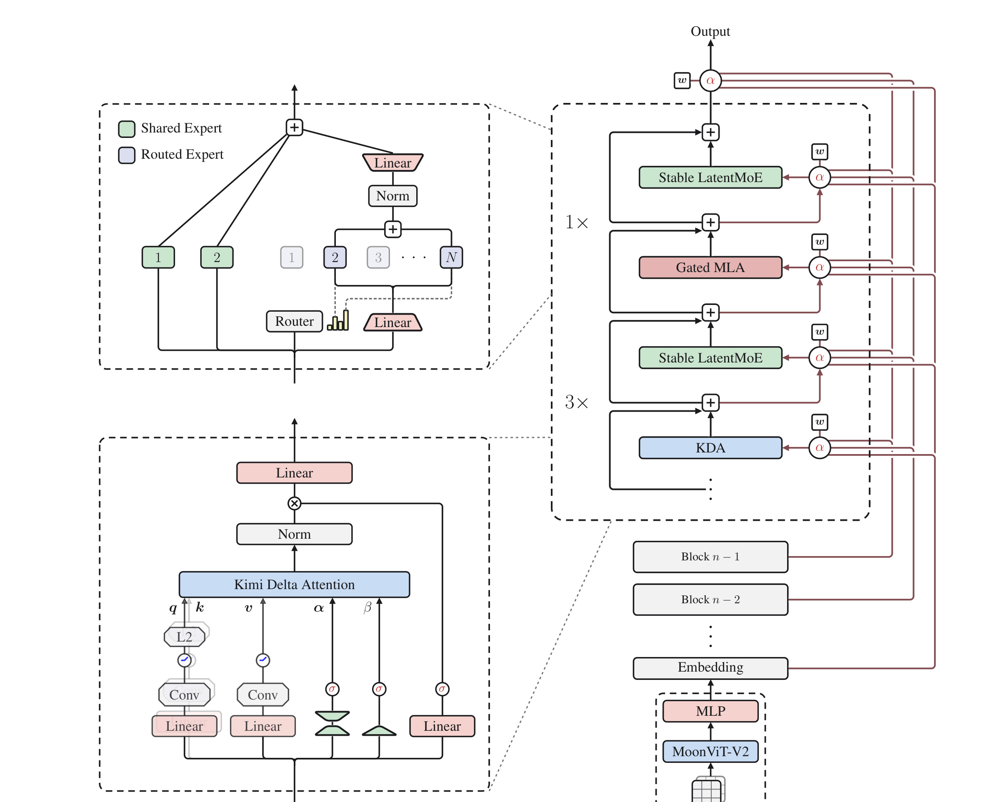
Figure 2 左下展开 KDA，左上展开 Stable LatentMoE，右侧则画出一个 block 的深度组织。每个标准 block 是 3 个 KDA attention layer 加 1 个 Gated MLA layer，每个 attention 后都接 Stable LatentMoE；总计 69 层 KDA、24 层 MLA，主干 93 层，末尾另用 Gated MLA 保持全局汇聚。右侧红色连线是 AttnRes：层输入不是单一前层输出，而是对 embedding 与此前 block 表示的选择性组合。视觉端 MoonViT-V2 经 MLP 接入 embedding 流，因此图像、视频和文本后续共享相同的 attention、MoE 与 residual 机制。这张图的核心不是组件数量，而是三种 mixing 相互正交：序列压缩不会代替深度检索，深度检索也不会代替专家分工。 训练时，这套结构要同时容纳 chunkwise KDA、全局 MLA、稀疏专家 all-to-all 和跨 pipeline stage 的 AttnRes source；推理时则变成固定 KDA state、随 token 增长的 MLA KV、冻结 bias 的 Top-k experts 和有限 block-level residual state。相同计算图在两阶段的状态形态完全不同，因此后文的 kernel、cache 和调度设计不是可选优化，而是架构能够达到 1M context 的必要部分。
2.2 Hybrid KDA–MLA 与 Block AttnRes：序列和深度的选择性读取
KDA 的基本状态递推采用 delta rule。对位置 $t$，每个 head 维护固定大小状态 $S_t\in\mathbb{R}^{d_k\times d_v}$：
符号解释：$q_t,k_t\in\mathbb{R}^{d_k}$ 是查询和键，$v_t\in\mathbb{R}^{d_v}$ 是值；$\alpha_t\in(0,1)^{d_k}$ 是逐通道保留率，先决定旧状态每个 key channel 留多少；$\beta_t\in(0,1)$ 再控制当前键值写入强度。矩阵 $I-\beta_t k_tk_t^\top$ 会沿当前 key 方向擦除旧关联，再加入 $k_tv_t^\top$，所以它比简单指数滑动平均更接近“发现冲突后改写记忆”。输出 $\widetilde{o}_t$ 只需让 query 读取固定状态，单请求 decode 不必保存随序列线性增长的 KDA KV。
训练和 prefill 若逐 token 递推会失去 GPU 并行性。对第 $t$ 个、长度为 $C$ 的 chunk，$Q_{[t]},K_{[t]},V_{[t]},O_{[t]}$ 按行堆叠各 token，$S_{[t]}$ 是入口 state；先定义逐通道累计衰减
并令 $\Gamma_{[t]}^{1\rightarrow C}\in\mathbb{R}^{C\times d_k}$ 的第 $r$ 行为 $\gamma_{[t]}^{1\rightarrow r}$。UT transform 构造 $U_{[t]}\in\mathbb{R}^{C\times d_v}$、$W_{[t]}\in\mathbb{R}^{C\times d_k}$ 及 pseudo-value $\widetilde V_{[t]}=U_{[t]}-W_{[t]}S_{[t]}$。为简洁省略 chunk 下标后，并行计算是
第一项读取前一 chunk，$A\widetilde V$ 用含对角线的 causal matrix 完成 chunk 内 delta-rule。风险在 $K/\Gamma$：累计衰减过小会令倒数溢出，也迫使旧 Kimi Linear 的 diagonal tile 保留逐位置路径。K3 因而把每个 head 的 log-decay 约束为
$A_h$ 是可学习的 head-wise log scale，$z_t^h$ 来自低秩 decay projection；该映射不取消长期遗忘，只限制单步动态范围。
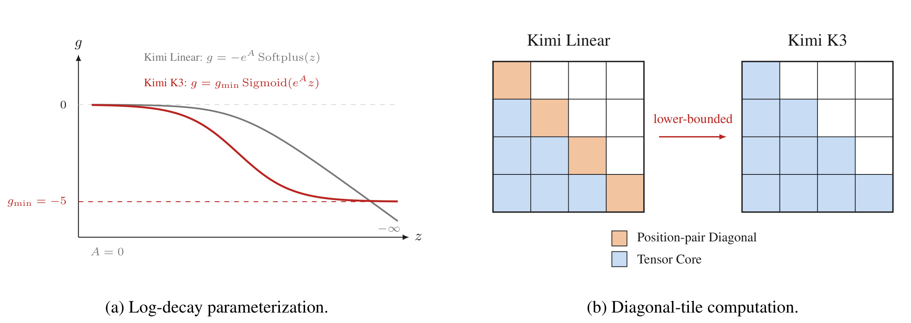
Figure 3 左图比较旧的负 Softplus 与 K3 的下界 sigmoid：旧映射可无限向负，K3 在 $g_{\min}=-5$ 处渐近饱和。单步因此有 $\alpha_{t,j}^h>e^{-5}\approx6.7\times10^{-3}$；16-token tile 的累计 log-decay 落在 $(-80,0)$，倒数小于 $e^{80}$，仍在 BF16 范围内。右图把数值约束直接投射到 kernel：Kimi Linear 的 diagonal tile 仍包含 position-pair 路径，K3 则能让所有 causal tiles 使用 Tensor Core。换言之，这不是只为“训练更稳”而改一条激活函数，而是用可证明的动态范围换取统一矩阵乘路径。但下界也意味着模型不能在单步把某个 channel 的记忆衰减到任意接近零；是否会妨碍极快状态重置，报告没有单独消融。 KDA 输出先做 per-head RMSNorm，再经过 full-rank 数据依赖门：
MLA 对应门为 $y_t=W_o[\operatorname{Sigmoid}(W_gx_t)\odot\widetilde{o}_t]$。MLA 把每个 token 的 key/value 压到 latent $c_t=W_cx_t$，缓存 latent 后再上投影恢复各 head 内容；K3 的 MLA 全部使用 NoPE，不对 query/key 注入显式位置编码。位置敏感性由中间 KDA 的衰减和递推提供，MLA 只做无位置的全局内容匹配，从而在扩到 1M 时不必重调 RoPE base 或做 YaRN。代价是纯 MLA 层不能独立区分同内容的绝对/相对位置，其定位能力依赖上下游 KDA 已把顺序编码进表示。
普通 residual stream 可看作沿深度的 RNN：第 $l$ 层看到的是前面所有输出的累计和，却无法直接问“我此刻更需要第 8 层的局部模式，还是第 50 层的抽象语义”。Full AttnRes 为每层学习 pseudo-query $q_l=w_l\in\mathbb{R}^d$，把 embedding 和此前层输出作为 key/value：
RMSNorm 防止幅值大的旧层仅靠 norm 垄断 softmax。pseudo-query 是 layer-specific 而非 token-specific，这使跨深度选择成本远小于为每个 token 生成复杂 query，但也意味着同一层对不同 token 使用相同的深度偏好，内容适应性主要来自 key。
Full AttnRes 的算术复杂度在不足百层时不算大，真正问题是必须让全部历史 layer output 保持存活；在 pipeline parallel 中，它们还要跨 stage 搬运。Block AttnRes 将 $L$ 层分成 $N$ 个 block，在 block 内把输出累加成 $b_n$，跨 block 才做 full attention。block 的第一层读取 $[b_0,\ldots,b_{n-1}]$，后续层额外读取当前 block partial sum $b_n^{i-1}$。这样存储和通信由 $O(Ld)$ 降到 $O(Nd)$。K3 的 93 个主干层具体是前 7 个完整的 12-layer block 加最后 1 个 9-layer partial block，共 8 个网络 block；再把 embedding 作为固定来源计入，AttnRes 一共面对 9 个 block-level 来源。推理可用 online softmax 合并并行的跨 block 项与顺序的 block 内累加。 这一机制的直觉是为深层网络恢复“来源可寻址性”。它不会增加 token 上下文长度，却能减少深度压缩造成的信息丢失。值得注意的是，报告没有展示 K3 同规模下普通 residual、Full AttnRes 和 Block AttnRes 的独立 loss/benchmark 表；因此 AttnRes 的价值来自结构论证、既有论文引用与工程案例，而非本报告里的完整归因实验。
2.3 Stable LatentMoE：896 专家下的宽度扩展
K3 每层有 896 个 routed experts，每 token 激活 16 个，另有 2 个 full-width shared experts。hidden width 为 7168，routed latent width 为 3584。LatentMoE 先把 $x\in\mathbb{R}^d$ 下投影到 $z=W_\downarrow x\in\mathbb{R}^{\ell}$，只在较窄 latent 上执行多个 routed expert，再上投影回 full width：
$T_k(x)$ 是 Top-$k$ 专家集合，$p_i$ 是混合权重，$N_s=2$。shared path 保留全维共性变换；routed path 用半宽通信和权重流量换取 16 路专门化。RMSNorm 位于 routed aggregation 与 $W_\uparrow$ 之间，避免不同专家组合和权重总量让上投影输入尺度漂移。 极端稀疏下，routed path 包含下投影、专家 GLU 多分支和上投影，连续矩阵乘会放大异常激活。K3 用 SiTU-GLU 对 gate 的 Swish 线性因子与 up branch 分别 soft-cap：
其中 $\beta_1=4,\beta_2=25$。在原点附近，$\beta\tanh(z/\beta)=z+O(z^3/\beta^2)$，所以一阶行为接近 SwiGLU；大输入时两支都饱和，逐坐标输出满足 $\lVert\operatorname{SiTU\text{-}GLU}(x)\rVert_\infty\le\beta_1\beta_2=100$。这是光滑软上限，不像 hard clamp 在阈值外完全丢失梯度，但上限取值仍是经验超参数。
负载均衡采用 auxiliary-loss-free routing。router 计算 $s_i=\operatorname{Sigmoid}(W_rx_i)$，以带 bias 的分数选路，却用不含 bias 的 raw score 归一化 mixture weight：
因此 $b$ 只调 dispatch，不直接改变反向传播学习到的专家组合权重。传统固定步长 sign update 在 896 专家时容易在“跟不上分布变化”和“负载来回振荡”之间折中。QB 对 batch 中 $m$ 个 token、$n$ 个专家、每 token 选 $k$ 个专家定义目标负载 $q=mk/n$。对每个 token 先取带 bias score 的第 $k+1$ 大值 $\alpha_i^{(t)}$ 作为入选门槛，再令下一步 bias 为 margin 的对应分位数：
在无 ties 的理想情况下，这使恰好 $q$ 个 margin 超过阈值。第二行移除公共 offset，因为给所有专家 bias 加同一常数不改变 Top-k。更新只在下一步生效，避免用本 batch 自己算出的 bias 改写同一 batch 路由；推理时则冻结最终 bias，不需要全局统计。
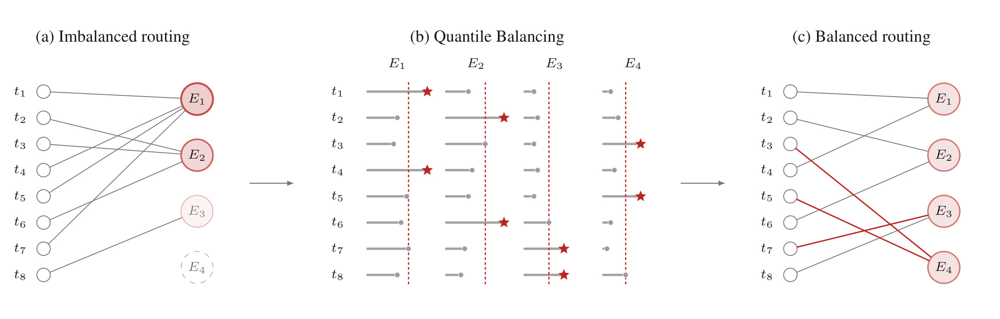
Figure 5 用 8 个 token、4 个专家、$k=1$ 的最小例子展示 QB。左图普通 token-wise Top-k 产生 $(4,3,1,0)$ 的负载，一名专家过热，一名专家死亡；中图每列虚线就是根据第 $q+1=3$ 大 margin 得到的 bias 调整，星号表示调整后每行选择；右图负载变为 $(2,2,2,2)$。图的关键是 QB 仍保持“每个 token 独立 Top-k”的执行形式，平衡约束通过下一步 expert-specific bias 注入，而不是求一个昂贵的全局离散匹配。实际训练用每专家 1000-bin histogram 近似分位数，一次 all-reduce 合并计数；估计误差不超过 bin width。附录还将它写成 balanced assignment 的凸对偶，说明旧 sign-based 方法可视作同一目标的 SignSGD 近似。
2.4 原生视觉、长上下文课程与多 effort 后训练
K3 不把一个对比学习视觉塔接到已完成的语言模型上做后置对齐，而是从训练开始让文本、图像和视频在同一上下文中进入共享 backbone，并用 next-token prediction 联合优化。MoonViT-V2 约 401M 参数、27 层、patch size 14、12 heads；空间与时间 attention 分解，视频还做 temporal pooling，随后以 $2\times2$ pixel shuffle 把视觉 token 减少四倍，最高支持 $3584\times3584$ 输入。作者放弃 SigLIP 初始化，理由是预训练视觉表示与语言主干的梯度尺度错配会产生尖峰；从零训练曲线更平稳，但报告只说总体视觉评测与 SigLIP 初始化基线相当，没有给完整下游表。因此可以确认优化稳定性证据，不能进一步声称从零训练显著提升视觉能力。 优化器层面，K3 对 Q/K/V momentum 按 attention head 分块执行 Muon 的 Newton–Schulz 正交化。普通整矩阵正交化可能让梯度较大的 head 主导更新，per-head 版本为各 head 独立规范谱结构，再与 weight clipping、QB 和 cosine learning-rate schedule 配合。训练使用 1% linear warmup、weight decay 0.1。报告提到 cosine 相比 independently tuned WSD 更好，却没有公布数值表，这仍属于 recipe 经验而非充分消融。 上下文课程分两段：主要预训练从 8K 扩到 64K，cooldown 再扩到 256K 和 1M。长文、长视频经过近重复去除、质量过滤与结构验证，并增加必须跨越整段上下文取证的合成任务。MLA 使用 NoPE，使 context extension 不依赖 RoPE interpolation；KDA 的位置敏感性来自递归衰减。课程训练避免模型一开始就在 1M 长度上支付极高成本，也防止短文信号被长文 batch 完全稀释。不过总训练 token、各阶段占比、总 FLOPs、时长和集群规模均未披露，外部团队无法据此复现同一 scaling curve。
后训练先用旧 Kimi 专家轨迹、多阶段 verifier 与人工标注做 SFT cold start，并用 XTML 统一 thinking、response 和 tool calls；再在 general、general agents、coding agents 三域各训练 low、high、max effort，共九个 teacher。长轨迹采用 partial rollout：每轮对 $N$ 个 prompt 各采样 $K$ 条，完成 $\lambda NK$ 条即暂停并更新，未完成的 KV 与环境状态下轮优先恢复；一个 prompt 的 $K$ 条 response 全部结束后才整组进入优化。跨 iteration 的轨迹会成为极端 stale/off-policy 数据，逐 token regularization 将 policy update 限在旧策略局部邻域。effort 控制以 $\tau b_0(x)$ 为预算，超限 reward 置 $-1$。不可程序验证的 general tasks 则由 Agentic GRM 做 tournament-style 二元比较；judge 必须“读取成品 → 生成 rubric → 逐项评分 → 写入 scorepad”。若输出超过 cold-start verbosity $\ell_0$ 的 $\sigma$ 倍，候选自动落败，避免用冗长骗取奖励。
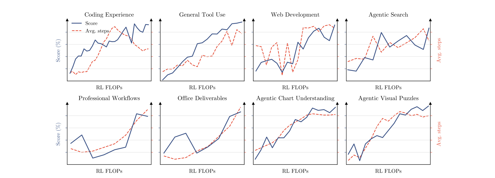
Figure 8 横跨 coding experience、general tool use、web development、agentic search、professional workflows、office deliverables、agentic chart understanding 和 visual puzzles 八类任务。红线分数与蓝线平均 assistant steps 通常随 RL FLOPs 上升，说明训练没有只把模型推向更短的 benchmark trick，而是同时拉长有效工具链。图的证据边界也很重要：横轴没有给绝对 FLOPs，纵轴多为归一化趋势，不能从图中计算每翻一倍 RL 计算带来多少点收益；它支持的是“多个任务族同向扩展”，不是一条可外推的定量 RL scaling law。 任务来源决定 Agent RL 上限。K3 让 agent 从粗粒度 seed node 递归扩展一个有向无环知识图谱，先搜索并合并等价概念，再按目标领域和粒度采样相关节点，将祖先上下文与关键词组合为 web query，检索论文、博客、代码仓库等公开材料，最后选择 coding、knowledge、vision 等任务类型合成训练实例。
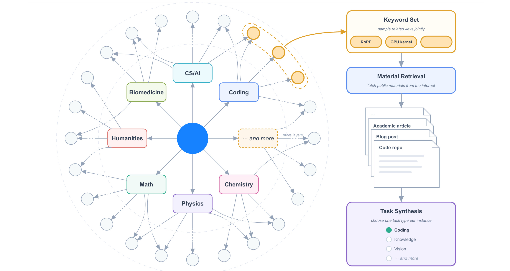
Figure 9 左侧的层级图谱从 CS/AI、biomedicine、humanities 等大类逐步深入到细概念；中间不是直接让生成器凭关键词编题，而是先构成 related keyword set，再检索真实材料；右侧才按任务类型合成。这样做同时控制覆盖面与难度粒度，并让任务拥有可追溯资料。它也带来新的风险：搜索源质量、图谱去重、材料许可、合成 verifier 与训练/评测污染都可能影响结论，报告只描述流程，没有公布图谱规模、材料分布或污染审计。图中 pipeline 能证明数据工程的设计意图，不能替代数据透明度。
九个 teacher 最终以 MOPD 合并。对领域 $d$ 和 effort $e$，学生按当前 policy 采样 $y$，teacher 提供逐 token 的截断对数比 reward：
$\operatorname{sg}$ 停止 reward 梯度，clip 抑制低概率 token 的极端比值；on-policy 让 teacher 评价学生真正访问的状态，减轻长程 agent 的分布偏移。部署约束也前置：SFT 起仅将 MoE routed-expert weights 量化为 MXFP4、其输入 activations 用 MXFP8，attention projections、LatentMoE 上下投影、shared experts 和 routers 保持高精度；RL rollout 与训练沿用该边界。预训练 MTP 层再改造成 EAGLE-3 draft，直接优化 lossless speculative sampling 的接受质量：
$p,q$ 分别是 target 与 draft 的下一 token 分布，$\sum_x\min(p,q)$ 正是两分布重叠质量，与可无损接受的概率直接相关。它把“draft 更像 target”改成“draft 更可能被接受”，优化目标更贴近实际吞吐。
2.5 从 3T 预训练到 1M Agent 的基础设施协同
KDA recurrence 天然串行，论文按训练/prefill、长上下文 prefill 和 decode 三种 regime 分别设计 kernel。跨设备 context parallel 时，每个 segment 的状态变换可写成 affine pair：
不同 rank 的 $(M,\widetilde S)$ 可结合地组合，再以 prefix scan/all-gather 求每段精确入口状态；通信只传固定状态，不随 sequence length 线性增长。decode 则用 persistent kernel 避免每 token 启动开销。 MoE 训练的难点是 expert parallel rank 上 token 数动态不均。MoonEP 要求每个 rank 精确接收 $S\times K$ 个 token，通过在线 planning 与动态 redundant experts 迁移负载；附录证明任意路由下每 rank 最多需要 $E/R$ 个冗余专家，且该界近似紧。平衡后每层 expert GEMM shape 固定，host 不再读取动态 token count；fused permute/unpermute 让 token 直接落在远端 expert-grouped buffer，减少中间 copy。shared expert 计算还能与 dispatch/combine all-to-all 重叠。
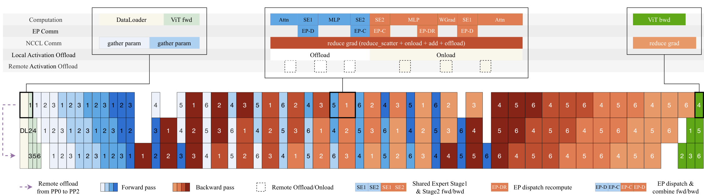
Figure 11 上半部以 pipeline stage 时间线画出 DataLoader、ViT forward/backward、attention、shared expert、routed expert dispatch/combine、gradient reduce 和 activation offload/onload。红蓝格子不是算法模块图，而是执行排程：本地与远端 activation 在不使用时卸载，shared expert 填充 all-to-all 空隙，反向阶段还会重算 dispatch。图的价值在于说明“完美负载均衡”不仅减少慢 rank，还让 shape 静态化，从而使通信、计算和显存搬运可预排。 百万 token Agent RL 还要保存环境。co-located 系统把训练与 inference worker 放在同一集群，KV 可移到外部 CPU pool；adaptive throttling 根据 KV 和执行压力暂停新 decode；sandbox 以 resumable microVM checkpoint 保存文件系统、进程与工具状态。报告给出的 AgentENV checkpoint/resume 最低延迟为 133/49 ms；sandbox 等待模型时可释放 CPU/RAM，这段空闲可占生命周期 98%，实测 memory overcommit 最高 6.5 倍。系统累计创建 51,219,741 个 sandboxes、1,505,678 个 images，说明这里面对的是大规模调度而非少量演示任务。 线上缓存需要同时管理两种状态：MLA KV 随 token 增长且适合 paged cache，KDA state 固定大小但单个 checkpoint 较大。若 physical block、prefix hash 与 KDA checkpoint 共用同一粒度，要么 block 太小导致 checkpoint 爆炸，要么 block 太大使未对齐 prefix 无法命中。K3 将三者解耦：例如 6144-token physical block 内含 12 个 512-token hash blocks，KDA checkpoint 只稀疏保存于可被 hash 查询的 endpoint。
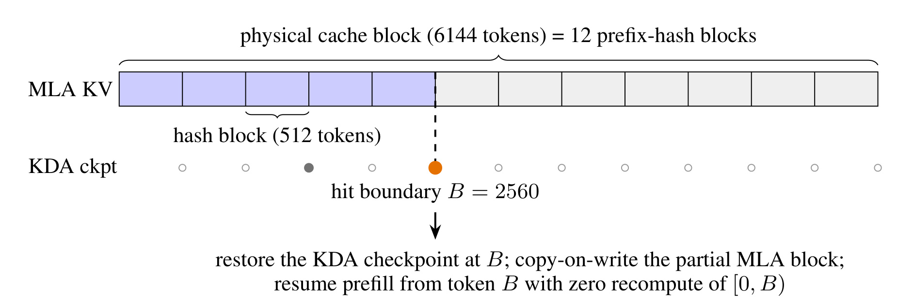
Figure 12 展示命中边界 $B=2560$ 时的恢复过程。MLA 在一个尚未填满的物理页里仍可按 512-token endpoint 命中；KDA 则检查该边界是否有所有 cache group 的 state snapshot。命中后恢复 KDA checkpoint，对 MLA partial block 做 copy-on-write，从 $B$ 继续 prefill，不重算 $[0,B)$。这张图揭示了 1M context 服务的真正细节：固定状态并不自动等于好缓存，因为 prefix reuse 需要时间点状态；稀疏 checkpoint 又必须与可查询 endpoint 对齐。最终 fleet scheduler 还要以 cache affinity 路由请求，并按请求类别、effort 和预算做 admission，才能把模型层能力转化为可预测成本。
3. 实验结果
3.1 规模、训练与 scaling 证据
K3 的公开规格是 2.78T 总参数、104.2B 激活参数、93 层、hidden width 7168、896 routed experts、16 active experts、2 shared experts、69 KDA 与 24 MLA；相对 K2，层数增加 52%，总参数增加 167%，激活参数增加 220%，上下文由 128K 提升到 1M。视觉塔 MoonViT-V2 约 401M 参数，原生接入多模态预训练。报告最强的效率主张来自 fitted scaling-law：在验证 loss 对训练 FLOPs 曲线上，K3 相对 K2 获得约 2.5 倍 scaling efficiency。
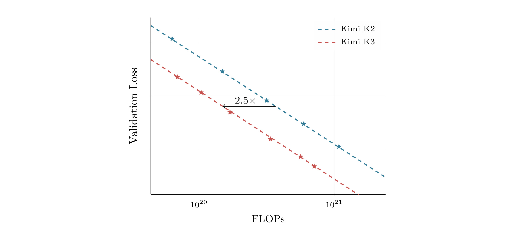
Figure 7 中 K3 的红色虚线整体位于 K2 蓝线下方；横向的 2.5× 箭头表达的是达到同等 validation loss 所需 FLOPs 的相对差距，而不是单次训练 wall-clock 提速 2.5 倍。两条虚线在 log-FLOPs 范围内近似平行，作者据此强调代际效率位移，而不是只展示某个预算点的偶然胜负；但图上没有公开原始观测点，读者无法检查拟合是否被少数规模主导。曲线支持“整套新配置在作者 scaling 实验里更高效”，却没有展示拟合方程、置信区间、各点数据规模或单模块曲线。更重要的是，K3 同时改变了 attention、residual、MoE、优化器、数据和训练 recipe；因此 2.5× 是系统级合成指标，不能写成 KDA、QB 或某个 kernel 独立贡献。
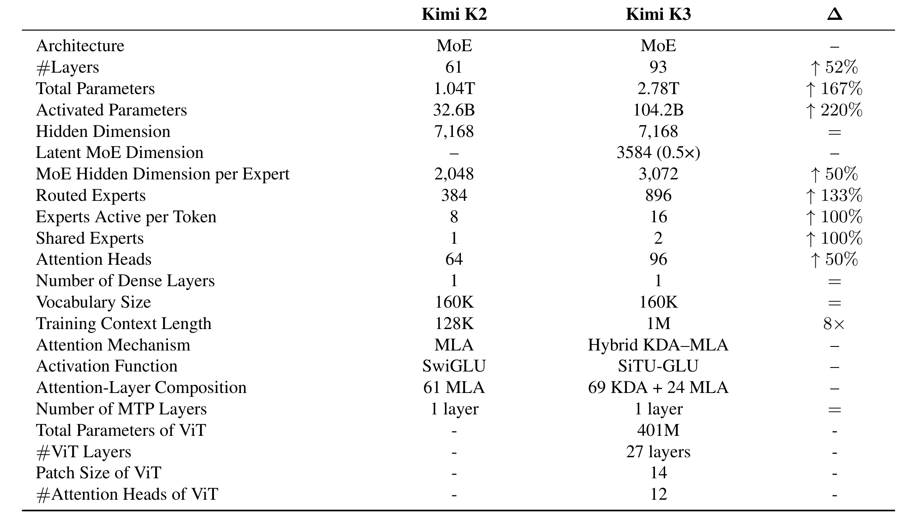
Table 1 把代际变化拆得更具体。K2 有 61 层、1.04T total/32.6B active、384 routed experts/8 active/1 shared、61 个 MLA layer；K3 变为 93 层、2.78T/104.2B、896/16/2，并用 69 KDA + 24 MLA 替代纯 MLA。routed expert 的 latent width 为 3584，即 hidden width 的一半；单专家 MoE hidden 从 2048 增到 3072。表中“attention FLOPs / layer”为 K3 的约 0.8×，但总层数和激活宽度同时增长，不能将它直接换算成全模型 FLOPs。context 8× 与 active parameter 3.2× 也说明：K3 不是靠更稀疏来抵消所有规模增长，而是接受更大单 token 计算，再从 attention 和系统侧回收效率。
预训练数据按 Web Text、Code、Mathematics、Knowledge 和 vision corpus 描述，包含规则过滤、质量 classifier、去重、数学/知识 rephrasing 与 fidelity verification，以及 SVG、网页、CAD、游戏等代码—渲染对。可是报告没有总 token、语言比例、训练成本、污染控制结果与数据许可证分布。因而 scaling curve 可以比较作者内部 K2/K3 配置，却不足以让第三方复算“相同数据预算下”的架构净收益。
3.2 公共 benchmark：强项、弱项与口径
公共评测覆盖 reasoning/knowledge、coding、agentic、vision 四轴。K3 默认 max effort、temperature 1.0；单步推理与无工具视觉多用 top-$p=0.95$，agentic 多用 top-$p=1.0$。HLE、MMMU-Pro、CharXiv、Math-Vision、ZeroBench 同时报告无工具/有工具结果；coding 可能运行 Kimi Code、Claude Code 或 Codex，Terminal-Bench 还取各模型最佳 harness。Fable 5 结果可能包含 fallback，GPT-5.6 Sol 结果可能包含 cyberguard。先理解这些脚注，才有资格比较表中小数点。
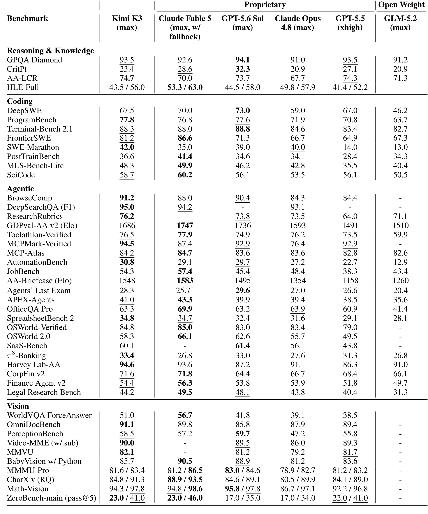
Table 2 中 K3 的突出项包括 ProgramBench 77.8、SWE-Marathon 42.0、BrowseComp 91.2、DeepSearchQA F1 95.0、MCPMark-Verified 94.5、AutomationBench 30.8、SpreadsheetBench 2 的 34.8 和 OmniDocBench 91.1；这些指标在表内为最佳或接近最佳。Terminal-Bench 2.1 为 88.3，仅低于 GPT-5.6 Sol 的 88.8；FrontierSWE 为 81.2，低于 Fable 5 的 86.6，却明显高于其余对手。视觉工具能显著改善部分任务：Math-Vision 从 94.3 升至 97.8，ZeroBench pass@5 从 23.0 升至 41.0，说明 Python 等工具已成为评测配置的一部分，而非模型裸视觉能力。
同一张表也否定“全面最强”的营销式解读。CritPt 只有 23.4，低于 GPT-5.6 Sol 的 32.3；HLE-Full 43.5/56.0，落后 Fable 5 的 53.3/63.0；GDPval-AA v2 为 1686 Elo，低于 Fable 1747 和 GPT 1736；OSWorld 2.0 为 58.3，低于 Fable 66.1 与 GPT 62.6；BabyVision + Python 为 85.7，也低于 Fable 90.5 和 GPT 88.9。报告摘要自己承认整体仍落后 Fable 5 与 GPT-5.6 Sol，这与表格一致。更准确的结论是：K3 在编码、搜索、工具协议、文档与部分视觉任务上进入第一梯队，并在多项表内领先；研究级难题、GUI 交互和若干长周期 Agent 行为仍有明显缺口。
内部评测只能作为补充。Swarm Bench 为 76.3、Deep Research 为 90.0；Kimi Webdev 对 Opus 4.8 的盲评 overall win/tie/lose 为 58.6/13.8/27.6，3D/WebGL/Shader 的 win-minus-lose 为 +59.1。弱项同样存在：MIRA 64.1 对 Fable 72.9，Agentic Vision 78.3 对 GPT 82.9。由于内部数据、评分器与任务集不公开，并且每行 harness 可能不同，这些数字适合说明作者优化方向，不应与公共 benchmark 等权使用。
3.3 第三方排名与成本效率
截至 2026 年 7 月 23 日，报告汇总的第三方截面包括 Artificial Analysis Intelligence Index 57.1（#4/580）、Vals Index 74.7（#2/39）和 WebDev Arena 1678 Elo（#1/99）。Elo 会随对局更新，名次不能当成永久事实。成本部分把公开 API 价格、不同 effort 和各 benchmark harness 结合：BrowseComp 中 K3 以每任务约 2.03 美元取得 91.2，报告称约为 GPT-5.6 Sol 成本一半、Claude max 约十分之一；Kimi Code Bench 2.0 距 Fable 约 4 分但成本为其 38%；GDPval-AA 距 GPT 不足 50 Elo且成本低 13%。
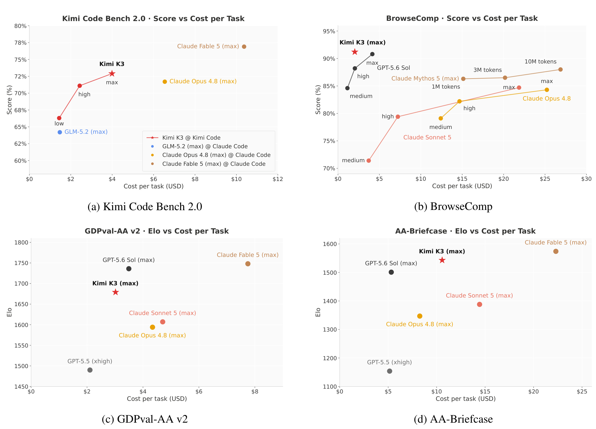
Figure 13 的四幅子图把 Kimi Code Bench 2.0、BrowseComp、GDPval-AA v2 和 AA-Briefcase 放到性能—成本平面，K3 以星号标记。BrowseComp 图最能体现 effort 选择：K3 medium/high/max 沿着从低成本到高分的方向移动，Claude 系列还包含不同 token budget；K3 max 位于左上边界附近。GDPval 与 AA-Briefcase 用 Elo 而非百分数，且模型价格、harness、fallback 和计费时间窗并未完全统一。因而“成本前沿”比“绝对便宜多少倍”更稳健：在这四套作者汇总口径中，K3 的点没有为了接近最高分而付出最昂贵的每任务成本，但它不是一项标准化的跨供应商 TCO 实验，也没有包含企业吞吐、缓存命中、并发与折扣价。
3.4 长程 Agent、系统与案例证据
Camera Repair Management System 是黑盒系统复制任务：Agent 只能通过 oracle query 理解隐藏的 3D 相机维修系统，再实现一个 web application。completion 由 verifier 判断任务进度，横轴是归一化 executor tool-call progress，而非简单 token 数。
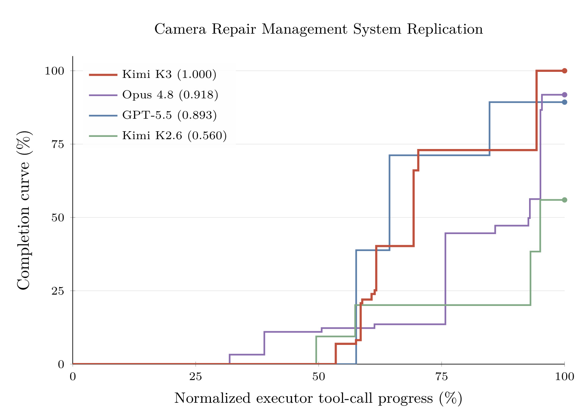
Figure 10 中 K3 最终达到 1.000，Opus 4.8 为 0.918，GPT-5.5 为 0.893，K2.6 为 0.560。曲线比最终分数更有信息：K3 在约 60% 工具进度前仍接近低完成度，随后通过数次大台阶修补功能，最后阶段再从约 73% 跃升至完全完成；这符合长程工程任务“先探测接口，再集中集成”的非线性过程。它说明 persistent rollout 和环境恢复能支撑有成果的长链，但只有一个代表案例，不能据此推断所有 autonomous execution 都达到同样成功率。
GPU kernel 优化案例给每个模型相同 sandbox，最长 24 小时，可 profiling、重写与 benchmark。AttnRes kernel 从 283.6 ms 降至 114.4 ms；报告还称 DSA runtime 降 55.1%、KDA 降 73.6%，MLA 达到峰值 TFLOPS 一半以上。
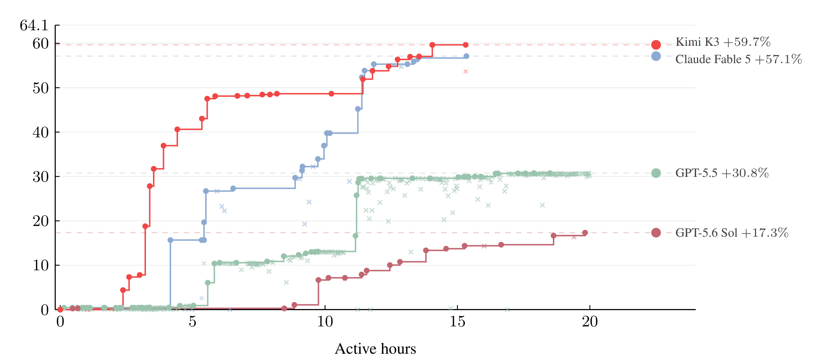
Figure 14 以相对 FLA Triton baseline 的 speedup 画出过程。K3 红线在前几小时迅速越过 30%，随后通过多轮小步改动到 +59.7%；Fable 5 在中后期追至 +57.1%；GPT-5.5 停在 +30.8%，GPT-5.6 Sol 为 +17.3%。这张图的重要性不是 K3 最后高 2.6 点，而是它持续找到有效改进且没有因回归把 best-so-far 丢掉，体现长时间 profiling—实现—验证循环。图也提醒我们，不同模型的搜索速度不同，24 小时终点会影响排名；报告没有给多随机种子、错误尝试数与能源成本。
MiniTriton 案例更接近可审计交付物。K3 构建了 Triton-like compiler：Python tile frontend、layout system、warp-level MLIR annotation/optimization、PTX backend，并用它实现 CUDA/tensor-core kernel、训练字符级 GPT 和两卡数据并行。
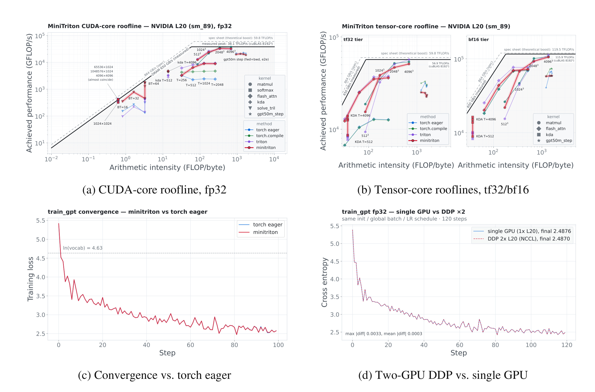
Figure 15 左上/右上把 MiniTriton 与 torch eager、torch.compile、Triton 和 cuBLAS 放到 NVIDIA L20 roofline，最大 matmul 约达到实测机器峰值的 90%；左下训练 loss 与 torch eager 基本重合；右下两卡 DDP 与单卡在相同初始化、global batch 和 schedule 下最终 cross entropy 为 2.4870/2.4876，最大差 0.0033、平均差 0.0003。正文另称与 FP64 reference 比较时全模型梯度差不超过 $10^{-4}$。这套证据同时覆盖速度、数值正确性、优化收敛和分布式语义，比只展示生成了若干源文件更强；但仍是作者挑选的成功案例，未公开失败率与测试覆盖率。
其他案例进一步展示轨迹长度：48 小时芯片设计得到约 4 mm²、100 MHz、RTL 模拟超过 8700 tok/s 的原型；天体物理任务约两小时读二十余篇论文、处理三百余个 EOS 并写三千余行 Python；知识工作读取 87 份季报和 99 个 PDF（超过 1.1 万页），执行 2800 余次 web search 与 1100 余次 terminal query。基础设施量测则说明系统能保存这些轨迹，但案例并非标准 benchmark，选择偏差、人工干预、验证器覆盖和复现实物均需进一步审计。
4. 总结
4.1 我的判断
Kimi K3 最值得关注的不是“首个开放 3T 级模型”这一作者声明，而是把信息流拆成三个可工程化方向：KDA/MLA 扩序列，AttnRes 扩深度，Stable LatentMoE 扩宽度；再以多 effort RL 将 1M context 变成长程行动能力。最有原创辨识度的细节是 KDA 下界衰减把数值范围直接转成 Tensor Core 路径、QB 用 margin quantile 替代慢且振荡的固定步长 bias、以及 KDA/MLA cache 在 physical page 内解耦 hash 与 checkpoint 粒度。它们共同体现一种成熟的方法论：不要只问公式是否降低渐近复杂度，还要问状态能否跨设备组合、shape 能否静态化、cache 能否复用、训练目标能否和线上接受率一致。
实验支持 K3 已进入开放权重前沿，并在编码、搜索、工具协议、文档与部分视觉任务上达到表内最佳；同时论文主动承认整体仍落后最强闭源模型，CritPt、HLE、OSWorld、MIRA 与 Agentic Vision 等结果也给出了具体边界。相比只挑胜项的发布稿，这种同时展示弱项的技术报告更有参考价值。不过“2.5× scaling efficiency”仍缺逐模块归因，内部 benchmark 与案例也不能替代开放复现。
4.2 工程启发与复现建议
对做长上下文或推荐/搜索系统的人，K3 有四个可迁移启发。其一，混合注意力的设计单位应是“状态与缓存形态”，而不只是 layer ratio；递归层和全局层必须共用 page manager、prefix lookup 与调度语义。其二，稀疏专家的路由质量与执行均衡应分开：raw score 决定 mixture weight，bias 只调 dispatch，能减少负载控制对表征学习的干扰。其三，reasoning effort 应进入训练条件与预算惩罚，而不是上线后粗暴改 max tokens。其四，长程 RL 必须 checkpoint 模型 KV 和外部环境；只保存对话文本会丢失进程、文件与浏览器状态。
若要复现或审计，建议按由小到大的顺序：先在小模型验证 Eq. 5 的衰减界是否消除 diagonal special path，同时检查极快遗忘任务；再以 64–128 experts 对比 sign update、exact quantile 与 histogram QB 的负载方差、通信、loss 和专家死亡率；随后对普通 residual、Full AttnRes、不同 block size 做同 token/FLOPs 消融；最后才测试 hybrid cache 的 prefix hit、copy-on-write 与 state consistency。Agent 部分应固定 harness、effort、价格和 verifier，报告成功率分布而非只给 best case，并让安全、长期记忆和多次恢复成为独立测试轴。
4.3 局限、风险与后续跟进
这份报告至少有七个需要保留的限制：
- 总训练 token、数据配比、总 FLOPs、训练时长、能耗和完整集群拓扑未披露，第三方无法复算 2.5× 的成本边界。
- 2.5× 同时包含架构、数据与 recipe，缺 KDA、AttnRes、SiTU、QB 等逐模块正交消融。
- 权重开放不等于训练全流程开放；官方仓库当前不能支撑“完整训练代码已发布”的表述。
- 公共评测存在 harness、effort、fallback、cyberguard 与工具配置混杂，小点差不应解释为裸模型能力差距。
- 内部 benchmark、盲评 evaluator 与案例选择不可复现，长程成功案例可能存在明显选择偏差。
- 论文没有独立 Limitations 章节；cyber 端到端 exploit、研究级推理、GUI/长周期 agent 仍有显著失败，安全与拒答行为也未系统分析。
- KDA 的衰减下界、Block AttnRes 的 layer-level pseudo-query、latent expert bottleneck 都可能在特定需要快速清空、token-specific 深度选择或高带宽专家表示的任务上形成结构上限。
后续最值得跟踪四件事：完整训练/推理代码和 kernel 是否持续开放；第三方在统一 harness 与固定成本下能否复现 Table 2/Figure 13；KDA–MLA 与纯全注意力在真实 1M 长文、长视频和多次恢复任务上的质量—延迟曲线；以及 QB/MoonEP 在更小集群、不同 expert 数与非均匀业务流量下是否仍保持收益。若这些证据逐步补齐，K3 的价值会从“一份强模型发布报告”上升为可复用的 3T 稀疏与百万 token Agent 系统范式；在此之前，最可靠的结论仍是它给出了一套高度一致、但尚未完全开放验证的端到端设计。